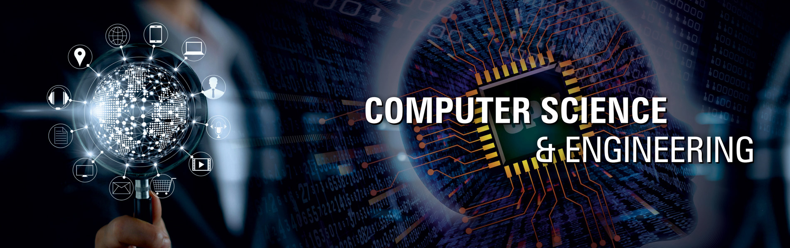
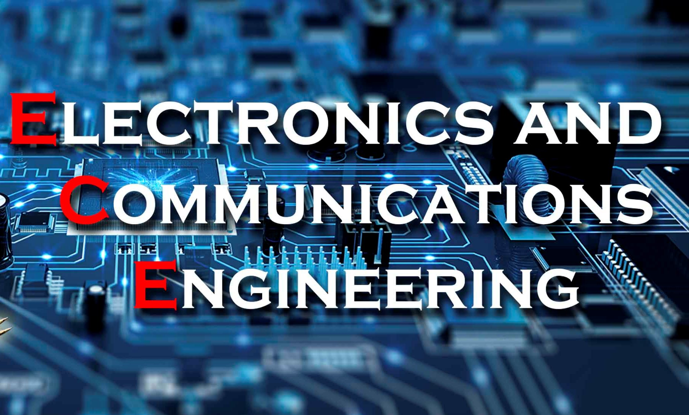
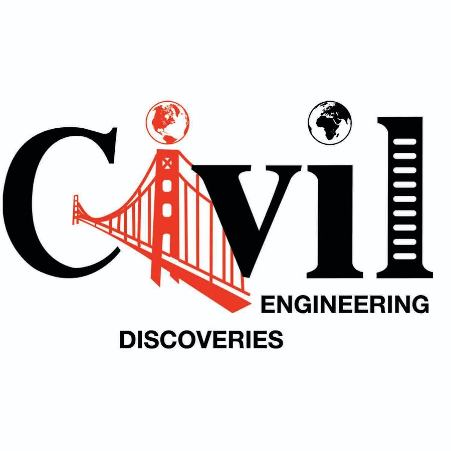

Diploma in Computer Science Engineering
Diploma in Computer Engineering is a Diploma level Computer Engineering course. This is a technical degree below the undergraduate rank which aims to provide students with some basic knowledge of engineering, science, computing, mathematical techniques, a sound knowledge of English to communicate in the job field and the ability to apply the basic problem-solving techniques. Its duration is 3 to 4 years. Computer Science is an interdisciplinary field, both in its origin and application. Computer Science plays an important role in virtually all fields, including science, medicine, music, art, business, law, and communication.
|  |
Program Highlights
- Curriculum alignment with industrial certifications such as CCNA, CompTIA Cloud Essentials, CCNA Security CompTIA Security+, CCNA Cyber Ops to enhance your career prospects.
- Choose from one of the many specializations offered that include Cloud Computing; Data Science; Cybersecurity; AI & ML or any other specialization as offered at the Polytechnic you have enrolled.
- Change your specialization by re-enrolling into the final year of the Diploma programme, if you are not happy with the kind of job in profile the specialization you have completed.
- 16 week enhanced internship programme at reputable companies to deepen your skills and provide you with exposure to real world projects.
|
Diploma in Electronics & Communication Engineering
Diploma in Electronics and Communication Engineering is a Diploma level Electronics and Communication Engineering course. The focus in this discipline is on understanding electronic networks and devices, electric magnetic fields, computer fundamentals, communication and control systems. Electronics and Communication Engineering uses the scientific knowledge of the behavior and effects of electronics to develop components, devices, systems and equipment. It deals with recent trends in communication technology via wire/wireless networks, circuit designs and Microcontrollers. After passing the course students have wide job opportunities in various fields including further study options.
|  |
Program Highlights
- Today’s highly-automated workplace has elevated productivity to new levels. Advanced systems are anchored by an array of electrical and electronic equipment.
- Choose from one of the many specializations offered that include IoT, VLSI and Embedded System, PCB Design & Fabrication, Medical Electronics or any other specialization as offered by the Polytechnics you have enrolled.
- You learn how to set up, maintain, and troubleshoot various electronic equipment available in your institution. Working with systems, you can develop electronics, mechanics, and networking skills by solving problems together.
- 16 week enhanced internship programme at reputable companies to deepen your skills and provide you with exposure to real world projects.
|
Diploma in Civil Engineering
Diploma in Civil Engineering is a Diploma level course. Civil Engineering deals with the design, construction and maintenance of the physical and naturally built environment, including works like roads, bridges, canals, dams and buildings. During the study, the student is exposed to various subjects of Civil Engineering such as planning, drafting (both manual and computer-aided), surveying, estimation & costing, construction technology, basics of the highway, railway, bridge, airport, tunnel and harbour engineering. the course also offers adequate exposure to reinforced concrete structures, quality control, material testing, construction management & entrepreneurship, professional practice and office procedures. Students also get a feel for an extensive survey, building drawing, irrigation & bridge drawing and structural engineering drawing.
|  |
Program Highlights
- The new C20 Curriculum prepares to be life-ready, work-ready and world-ready. It equips you with skillsets that are aligned with the Construction Industry.
- Choose one of the many specialisations offered that include Structural Engineering; Sustainable Built Environment; Infrastructure Engineering; Net zero Buildings or any other specialisation as offered by the Polytechnic you have enrolled.
- Change your specialisation by re-enrolling into the final year of the Diploma programme, if you are not happy with the kind of job profile in the specialisation you have completed.
- 16 weeks Internship Programme in the area of specialisation at reputable organisations where you not just apply your classroom learning to real projects but also learn and develop professional skills needed to be absorbed into employment.
|
Diploma in Mechanical Engineering
Diploma in Mechanical Engineering is a twelfth level Diploma course which deals with the field of engineering. Mechanical engineering is a discipline of engineering that applies the principles of physics and materials science for analysis, design, manufacturing, and maintenance of mechanical systems. Diploma in Mechanical Engineering seeks to provide more accessible and quality education and training to manufacturing or production personnel to meet the real work needs of the manufacturing or production industry and prepare them for the changes in techniques, technologies, markets and employment patterns. This Diploma is equivalent to Diploma offered by the Technical Education System and is equivalent to any of the similar diplomas offered by and other university/polytechnic in India. The minimum time duration is three years and the maximum is six years.
 |
Program Highlights
- Mechanical Engineering is the core of most engineering courses. You will get to apply your knowledge and skills to almost every other engineering discipline easily.
- Choose your career pathway of becoming an employee, a researcher or an employer. In the employment pathway, develop depth of knowledge in one of the following 4 (four) specialisations; Automation & Robotics, Advanced Manufacturing, e-Mobility and Applied Thermal Engineering. This will be followed by industry exposure through a structured 16 weeks internships or an industry project in the specialised subject area.
- You will gain advanced standing in mechanical engineering degrees at local universities and overseas higher education institutions.
|